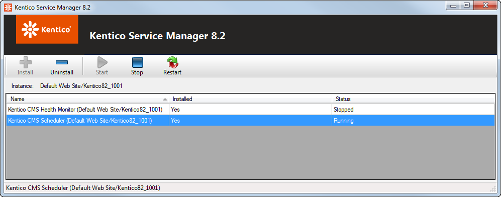
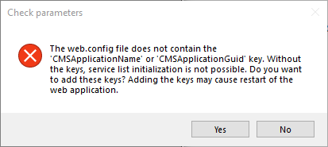

Kentico Service Manager
Kentico Service Manager is an external Windows utility which allows you to manage external Windows services used by Kentico. Using the utility, you can
install,
uninstall,
start,
stop and
restart Windows services for individual instances of Kentico.
You can perform the installation and uninstallation of Windows services from the command line and stop and restart them from Windows Service manager (services.msc). However, this utility integrates these tasks into a single tool, where you can manage Kentico services separately from other services running in Windows.
Launching the utility
Kentico Service Manager comes automatically with Kentico installation. You can launch the Kentico Service Manager in two ways.
From Windows
Launch the Kentico Service Manager from Windows Start menu.
Select the root of the Kentico instance, whose services you want to manage, in the Browse For Folder dialog box.
Click OK.
From KIM
Select an instance of Kentico.
Click the Services button on the toolbar.
Using the utility to manage Kentico services
After launching the utility (and successful selection of the managed Kentico instance when launched from Start menu), available services are listed in the main area. The following information is listed for each services:
Name - name of the Windows service in format <service name> (<CMSApplicationName web.config key value>).
Installed - shows if the service is installed or not.
Status - shows if the service is running or stopped, or intermediate statuses when the service is being started, stopped or restarted.
If you select a service in the listing, the following management actions are available in the top toolbar. The same actions are also available in a context menu accessible by right-clicking a service.
Install - installs the selected service. Only available if the service is not installed.
Uninstall - uninstalls the selected service. Only available if the service is installed.
Start - starts the selected service. Only available if the service is installed and not running.
Stop - stops the selected service. Only available if the service is installed and running.
Restart - restarts the selected service. Only available if the service is installed and running.

Kentico Service Manager toolbar
Defining custom services in the definition XML file
All Windows services that can be managed by Kentico Service Manager are defined in ~/App_Data/CMSModules/WinServices/services.xml file. If you want to add a custom service, which should work with the respective Kentico instance, you have to define it in this file.
The XML has a root <Services> element containing any number of <Service> elements, each of which represents a single Windows service. Each <Service> element contains the following sub-elements:
<basename> - identifying name of the service, the same for all instances of Kentico.
<name> - the same as <basename>, with the {0} part appended. The {0} part gets replaced with the value of the CMSApplicationName or alternatively CMSApplicationGuidweb.config keys to differentiate services of particular Kentico instances.
<displayname> - name of the Windows service in friendly format, displayed in user interfaces of Windows Services manager (services.msc) and Kentico Service Manager.
<description> - text describing the functionality provided by the service.
<assemblyname> - name of the service's executable file stored inside the bin folder in the application root.
Here you can see the default content of the services.xml file with the Health monitoring and Scheduler services defined.
<?xml version="1.0"?><Services> <Service> <basename>KenticoCMSHealthMonitor</basename> <name>KenticoCMSHealthMonitor{0}</name> <displayname>Kentico Health Monitor ({0})</displayname> <description>Registers categories with counters where information will be subsequently stored. Then it gets data from the database (e.g. the number of e-mails in the e-mail queue, the number of tasks in the queue, etc.) and stores it in the respective counters.</description> <assemblyname>HealthMonitoringService.exe</assemblyname> </Service> <Service> <basename>KenticoCMSScheduler</basename> <name>KenticoCMSScheduler{0}</name> <displayname>Kentico Scheduler ({0})</displayname> <description>Processes Kentico scheduled tasks that have the 'Use external service' option enabled. Processing is performed in regular intervals and only tasks with the mentioned option enabled are processed by the service.</description> <assemblyname>SchedulerService.exe</assemblyname> </Service></Services>Problems with required web.config keys
Kentico Windows services require the CMSApplicationName or CMSApplicationGuid keys to be added in the appSettings section of the web.config file. The values of these keys are used in the names of the Windows services and for identification of the Kentico instance. These keys are included in the web.config by default. If neither of the two keys is present in the web.config of the selected instance (after being removed manually), you will encounter an error message with two options.

Error message about missing application keys
Yes - the Service Manager adds the keys to the web.config so that services can work with the selected Kentico instance.
No - services cannot be managed for the selected instance. In this case, you can select another instance after clicking Select on the toolbar.